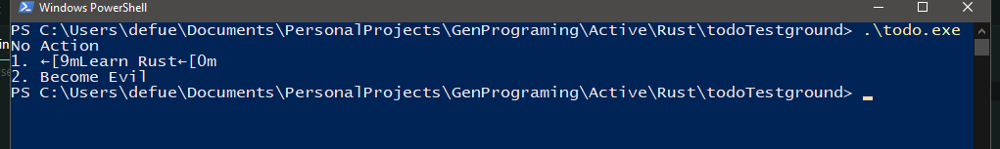

In Mid-March, I was bored. I had just completed my previous game jam game, and was looking to try something new. The Rust programming language was all over my social media freed at the time, so I decided to give it a shot. Before the article continues, I have to say that I have almost no frame of reference for languages like Rust, almost every line of code that I have written with the intent of being used has been in either Java or GDScript, so take everything I say from here on out with a grain of salt, this is all just my opinion.
The initial setup of my Rust dev environment was quite the process. I will be the first to admit that I am far from "pro level" when it comes to low level programming, so for someone more knowledgeable in the world of C and the command line this probably won't be as much of a problem. My main issue was the fact that almost all setup guides for Windows revolved around the use of Visual Studio, specifically a modern one. I personally hold a distaste for Visual Studio due to the required Microsoft License, (personally I'm not a fan of Microsoft in general, if it wasn't for my gaming hobby I would be using Linux 24/7). Eventually I figured out how to set it up in my preferred editor of VS Code (still Microsoft, but at least open-source).
Once I actually got Rust on my computer, actually using it was very smooth. The Cargo command line tools made building a breeze and the built in package management dealt rather handily with my main hang up with using libraries in other languages like Java.
After getting my build process figured out with a "Hello, World!" program, I decided to try my hand at a command line TODO app. I felt that it would let me get a grip on a lot of basic concepts such as reading in arguments, file IO, and output formatting. All in all this app didn't take me too long and it allowed me an excuse to check out some of Rusts more interesting features.
One thing that struck my interest immediately was Rusts Enums, in most languages enums are basically glorified integer constants, but in Rust, they are a core part of the language architecture. I honestly think that in all the rust code I've written so far, I use match statements twice as often as if statements. Rust's result enum made error handling far more straightforward, and in the context of the app, I used enums to represent the open/close format of tasks, and to represent user input actions.
Todo apps are nice and all for learning, but after getting my feet wet, I wanted to dive into making something that I would actually use. I write articles for this blog (and a lot of other things) in a markdown editor called Obsidian. For my first article, I had to manually copy over each piece of markdown plaintext into a HTML file, manually adding tags; this was a tedious process. So I figured, why not spend a weekend trying to automate away a ten minute task?
This task forced me to figure out Rust's input streaming, which I have to admit, was a fair bit more complicated that Java's and I'm still not sure I actually did it right. Input streaming wasn't technically required for this task given that I was only going to be converting small files, but I figured that I may as well do things the "correct" way. This app also forced me to learn Rust's regex library, this was actually something I'm comfortable with. but it was still a bit of a challenge.
Technically speaking, I still haven't made a proper markdown converter. My program assumes some formatting that technically means that it will misformat some fully valid markdown. In addition I still have to manually set up images, but overall it drastically sped up the process of converting plaintext markdown into blog-ready HTML.
Finally, I decided to try my hand at Bevy. The Bevy engine was actually the thing that drew me to Rust in the first place. I was excited to get my teeth into a proper ECS game engine. Unfortunately, I completely bounced off of Bevy. I'm sure it will be a perfectly fine engine some day, but as it stands I could not find anywhere near the kind of technical writing that I would need to get into it. The fact that Bevy was still in an unstable state didn't help wither. I felt like even if I did spend the weeks troubleshooting basic things like physics or ui, everything I figured out might just get obsoleted a couple builds down the road.
I'm sure that I will return to Bevy some time in the future, the concept behind it really does intrigue me, but for now, I'll stick with Godot.
This is where my Rust journey ends for now. I definitely intend to pick the language back up as I have some pretty big ideas that the language would be perfect for, likely of the web backend variety...